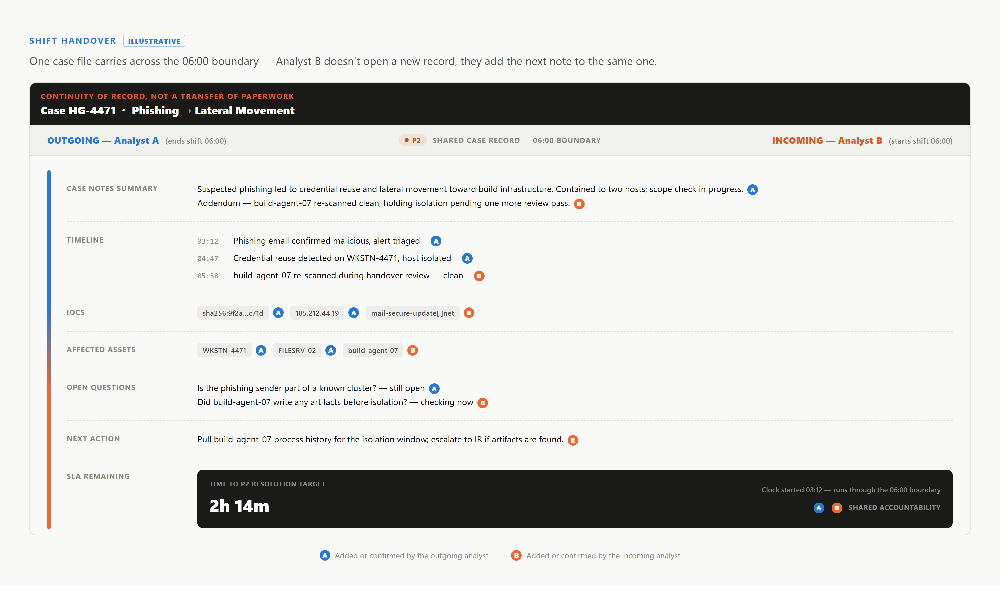

Analyst A confirms a P1 at 05:46, fourteen minutes before shift change, having already correlated the alert, pulled the process tree, and opened containment with the endpoint team — that work is the case, and the SLA clock has no concept of a roster. The common failure isn't an outgoing analyst who did nothing; it's one who did the work and left, forcing the incoming analyst to reconstruct reasoning from a record that captured actions but not intent. Good handover needs a short synchronous overlap, transferring judgment, not just facts.

A 2026 UCL study of SOC handover practice (arXiv:2601.07788) found that what transfers between shifts varies analyst-to-analyst, shaped by habit more than fixed procedure — a fair description of most SOCs' actual shift change. Its draft checklist of minimum handover elements appears below.
| Handover Element | What Should Be Visible to the Incoming Analyst |
|---|---|
| Case / decision state and evidence trail | What's confirmed vs. assumed, plus supporting artifacts. |
| Active alert / case status with timestamps | Which alerts are open, acknowledged, or escalated, and when. |
| Impacted assets and containment steps taken | What's isolated or blocked already vs. still pending. |
| Open questions and dependencies | What the outgoing analyst was still waiting on. |
The gap this case surfaces rarely shows at 06:10. It shows around 09:00, when Analyst B — working from a record that looked complete — re-asks a question already answered, or re-runs a check already confirmed, because the open-question field didn't carry over. It only becomes visible in hindsight, as SLA time spent rediscovering ground already covered.